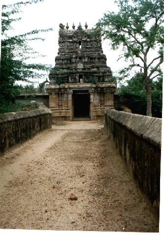

mayēntirappaḷḷi
- Identifier: KV06
- Modern Name (NIC):
- Modern Name (M.I.): kōyilaṭip pāḷiyam
- Modern Name (Govt Press): makēntirapaḷḷi
- Modern Name: Kōyilaṭip Pāḷiyam
- Modern District & Taluk: nākappaṭṭiṉam DT (cīrkāḻi TK)
- Old administrative location: Tanjore DT (Shiyally TK)
- Nearby town:
- Railway station: Koḷḷiṭam
- Longit. 79 deg. 48'; Latit. 11 deg. 22' [KV06]
- C.D.Maclean-3: entry: , p. , col. , lines
[ , lat. deg. ', long. deg. ']
- Location: according to PK: Cōḻa Nāṭu, Kāvēri Vaṭa Kari (KV06)
- Name inside hymns:
- Name inside PK: mayēntirappaḷḷi
- Rank inside third volume of PIFI: 227
- Rank inside Civastala Mañcari: 226
- Rank on PY576 map: 84
- Total number of patikam-s: 1
- Campantar: 1 patikam
NOTE (VMS):
This shrine is about four miles to the North-East of Tirupperumaṇanallūr.
This is now known as Kōyilatīpāḷayam
1 picture taken on 1997 August 10th (Sunday)

- Patikam 3_31